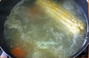

| Preparación |
Total |
Ingredientes |
Porciones |
| 2Hrs50Min |
4Hrs00Min |
16 |
6 |
El ajiaco colombiano es una de las sopas más ricas y completas, no solo en el país cafetero, sino en toda
Latinoamérica. Color, textura, ingredientes criollos, todo en un menú que lejos de ser una simple receta, es
reflejo de una rica historia culinaria.
Instrucciones
- Cocinar el pollo en agua, con la zanahoria, la cebolla cabezona, el apio, la mazorca y una cucharadita de
sal

Pelar las papas y cortarlas en tajadas.
Sofreir la cebolla larga y el ajo con un poco de mantequilla.
Retirar el pollo y los vegetales del caldo. Añadir las papas, la mitad de las guascas, los cubos de caldo de
gallina y las mazorcas. Tapar y cocinar a fuego medio.

Desmechar el pollo.
Cocinar hasta que la papa criolla y pastusa se deshagan. Rectificar la sal, añadir el cilantro y las guascas
restantes.
Servir con el pollo y acompañado con arroz blanco, aguacate, crema de leche y alcaparras.